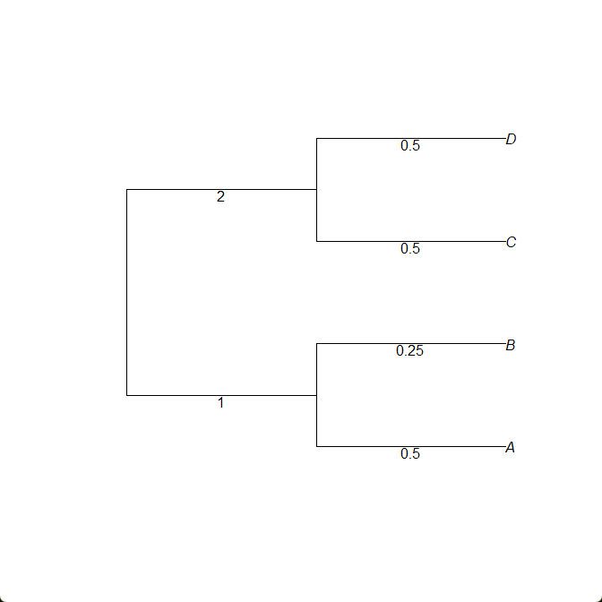

Estimating a pairwise distance matrix
Two methods for estimating pairwise distance matrices are implemented in InPhyNet.jl: calculateAGID and calculateAGIC. These correspond to Average Gene-tree Internode Distance/Count. The former (distance) averages the distance by branch length between each pair of taxa across all gene trees, while the latter (count) averages the number of internal nodes in each gene tree separate each pair of taxa across all gene trees.
For example, the internode distance between taxa $A$ and $C$ below is $4$, while the internode count between them is $2$ (the root is not counted).

For this walkthrough, we will use the AGID metric:
using InPhyNet, PhyloNetworks, SNaQ
est_gts = load_inphynet_example_gts()
D, namelist = calculateAGID(est_gts);